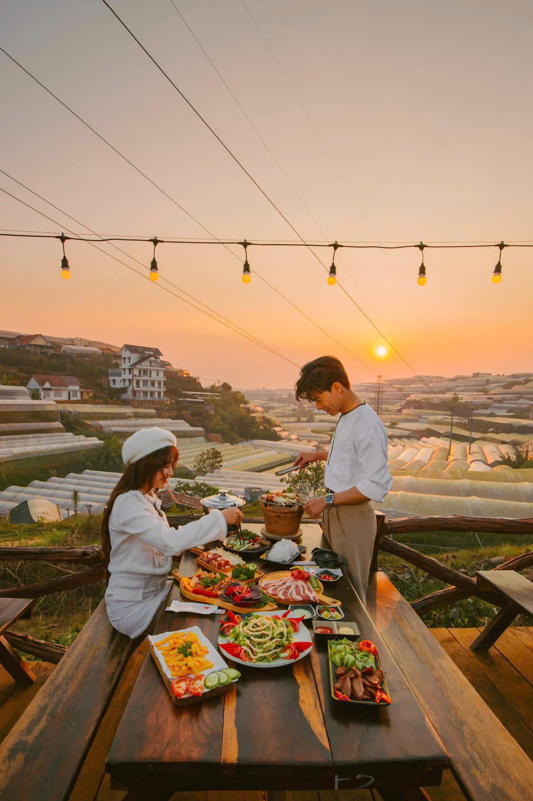

1. Nướng BBQ ngắm hoàng hôn cùng nhau
Không gì lãng mạn hơn ngồi cạnh nhau, tay trong tay nướng thịt, mắt ngắm hoàng hôn Đà Lạt buông xuống thung lũng. Tại Trạm Dừng Chill, bàn cho couple nhỏ xinh, riêng tư — bối cảnh hoàn hảo cho khoảnh khắc đầu tiên.

2. Đạp xe đôi quanh hồ Xuân Hương
Thuê xe đạp đôi, đạp quanh hồ Xuân Hương lúc sáng sớm. Sương mù nhẹ, không khí trong lành, hai bạn cùng đạp xe — kỷ niệm đáng nhớ cho tình yêu mới.
3. Cafe trên mây
Đà Lạt có nhiều quán cafe nằm trên đồi cao, sáng sớm sương mù bao phủ — như ngồi giữa mây. Gọi ly cacao nóng cho hai, ngắm sương tan dần — lãng mạn cực kỳ.
4-5. Chợ đêm và Thung lũng Tình Yêu
Dạo chợ đêm tay trong tay, ăn vặt cùng nhau. Ngày hôm sau tham quan Thung Lũng Tình Yêu — địa điểm kinh điển cho couple với hồ nước, hoa và cảnh đẹp.
6-7. Săn mây sáng sớm và Ngắm sao đêm
4:30 sáng lên đồi săn mây — biển mây Đà Lạt đẹp siêu thực. Buổi tối lên đồi vắng ngắm sao — Đà Lạt ít ô nhiễm ánh sáng nên sao rất sáng và rõ.
Kết luận
Đà Lạt là thiên đường cho cặp đôi mới yêu. Và bữa tối nướng BBQ tại Trạm Dừng Chill sẽ là kỷ niệm ngọt ngào nhất. Đặt bàn ngay!